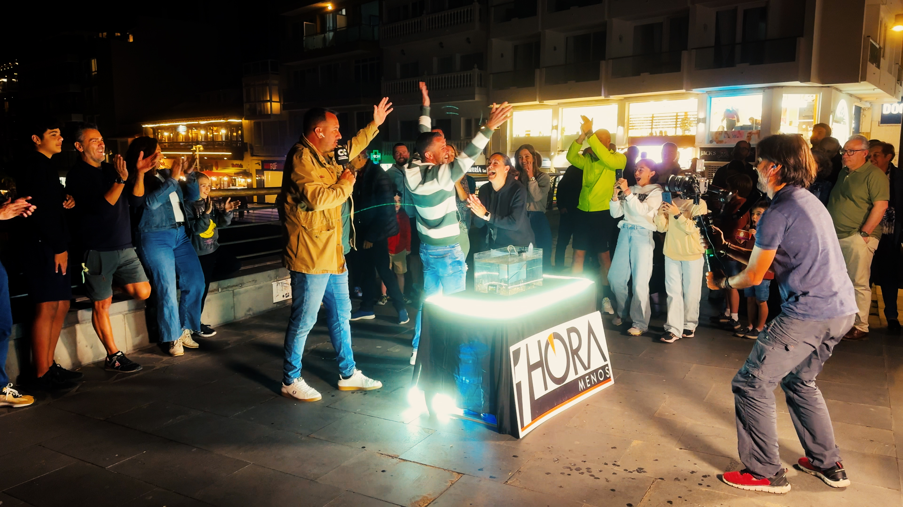

HUMAN DIVISION: HYPNOS AND CLEERS
HYPNOS are individuals connected to the collective hypnotron — a manipulated mental network that steers their emotions and beliefs without their conscious involvement and CLEERS are the Non-Hypnotizable.
THE DIVISION OF HUMANKIND: HYPNOS AND CLEERS
HYPNOS – The Hypnotizable (approximately 65–75% of the population)
Origin: The term derives from the Latin «hypnos» (sleep) and the suffix «-oid» (form, kind, type).
Definition: Hypnos are individuals who are suggestible to varying forms of suggestion or influence, including mass media narratives, crowd emotion, and charismatic leadership. Their beliefs and behavior are often shaped without their full awareness.
CLEERS – The Non-Hypnotizable
Origin: Derived from the English word “clear,” meaning lucid, transparent, and not clouded.
Definition: Cleers are individuals who demonstrate natural resistance to indirect influence and mass suggestion. They question dominant narratives, notice contradictions, and often appear unaffected by groupthink or mass emotion.
Cleers typically maintain independent judgment even when surrounded by overwhelming emotional or ideological pressure.